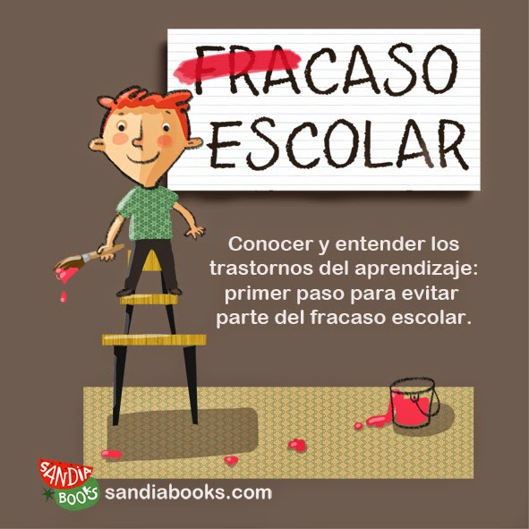

Intervención temprana
Identificar y abordar las señales de advertencia tempranas puede marcar una gran diferencia. Implementar programas de detención y apoyo para estudiantes en riesgos, como tutorías individuales, mentorías y asesoramiento académico y emocional.
Métodos de enseñanza innovadores
Es clave crear un ambiente seguro y sano para la educación, y utilizar métodos creativos para mantener la motivación y participación de los alumnos.
Programas extracurriculares y actividades motivadoras
Ofrecer actividades como deportes, arte, música u otras similares es importante para que los estudiantes exploren sus intereses y talentos fuera del ámbito académico ya que puede generar sentido de pertenencia y conexión con la escuela.
Orientación vocacional y apoyo postsecundario
Proporcionar orientación vocacional y exploración de carreras desde etapas tempranas, brindando a los estudiantes información sobre las diferentes opciones educativas y laborales disponibles. Ofrecer apoyo y recursos para facilitar la transición exitosa de la escuela secundaria a la educación postsecundaria o al empleo.
Para prevenir el abandono escolar, es esencial adoptar un enfoque integral que involucre a la comunidad educativa, los padres y las instituciones gubernamentales.
Recordemos que la educación es un derecho fundamental de todos los niños y jóvenes, y debemos trabajar juntos para asegurar que todos tengan la oportunidad de recibir una educación de calidad y completar su formación académica.
CAUSAS DEL ABANDONO ESCOLAR CONSECUENCIA TALLERES PREVENIR EL ABANDONO EL PAPEL DE LA FAMILIA APOYO DISPONIBLE